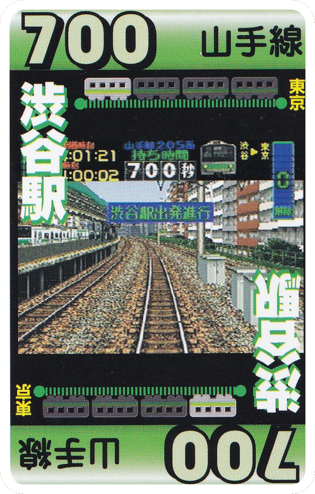
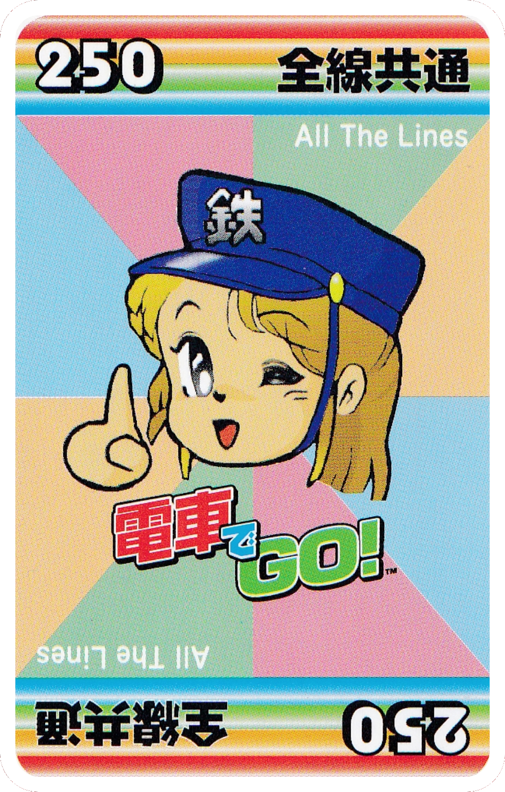
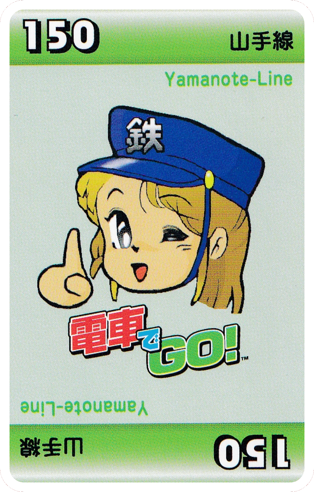

Types of Cards
Station Cards.....................16 pieces (1 each)

Distance to Destination
Line
Distance marking
Departing Station
山手線 (Yamanote Line)
Shibuya
渋谷
Ebisu
恵比寿
Shinbashi
新橋
Yurakucho
有楽町
京浜東北線 (Keihin–Tohoku Line)
Shinagawa
品川
Omori
大森
Kawasaki
川崎
Higashi Kanagawa
東神奈川
山陰本線 (San'in Main Line)
Kameoka
亀岡
Umahori
馬堀
Hozukyo
保津峡
Tambaguchi
丹波口
東海道本線 (Tokaido Main Line)
Kyto
京都
Takatsuki
高槻
Ibaraki
茨木
Shin-Osaka
新大阪
Distance Cards....................54 pieces


Distance
Line
Affects All Lines
50 (4 lines, 3 cards each)
100 (4 lines, 3 cards each)
150 (4 lines, 3 cards each)
200 (4 lines, 3 cards each)
250 (All the Lines 4 cards)
500 (All the Lines 2 cards)